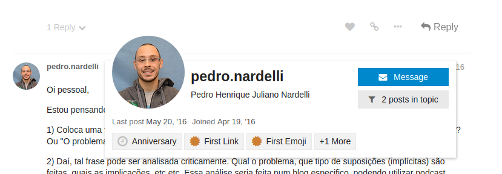
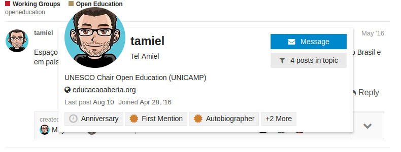
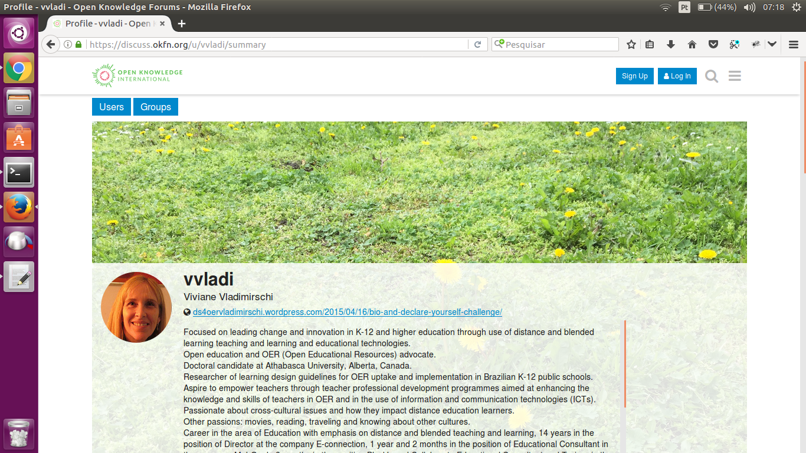

Apresentando-se
Para participar mais efetivamente da comunidade, APRESENTE-SE!
-
Edite o seu perfil!
-
Apresente-se em inglês se estiver com disposição de participar em discussões gerais da OK.
-
Apresente-se nos grupos específicos para destacar seus interesses naquela área e já chamar atenção daquele grupo.
-
Faça um post mais geral dentro de um tópico do tipo "home".
Edite seu perfil
Se não editar não tem problema, mas você não estará se apresentando quando as pessoas clicam no seu nome de usuário

Você pode se apresentar com apenas uma linha ou um link para sua home,

ou usar o formulário e o texto de apresentação de forma mais ampla, até com fotos.

É como um resumo dos seus interesses e qualificações nas áreas de atuação da OKBR (dados abertos, transparência, etc.). Pode ser português, inglês ou bilígue.
Apresente-se em tópicos onde queira interagir
Existem "tópicos genéricos" de discussão, que recebem a tag "home" para sinalizar que são a porta de entrada. Alguns exemplos:
-
OK International, para apresentar-se à comunidade OK internacional (em inglês), http://discuss.ok.org.br/73
-
Projeto Gastos Abertos, para apresentar-se à comunidade do projeto, http://discuss.ok.org.br/1359
-
Educação Aberta, para postar sua discussão inicial, informes, etc. http://discuss.ok.org.br/2778
-
Canal Medium OKBR, para discutir artigos do canal, http://discuss.ok.org.br/5849
Alguns são apenas para apresentações, outros são um ponto de partida, outros ainda são uma espécie de blog do assnto.